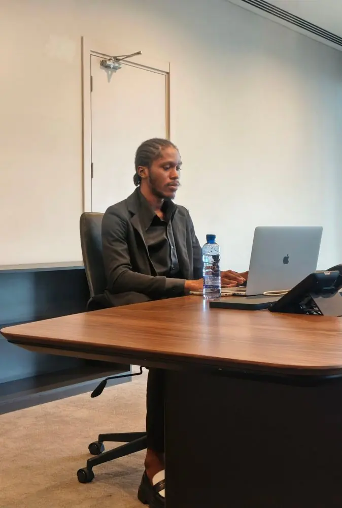

Benj Mansambu Lupini« Lewis » · CEO & cofondateurFacebook ›
Biographie du CEO
Benj Mansambu Lupini
Cofondateur d'ITM Digital Communication en 2022, Lewis cumule plus de 10 ans de carrière dans la photographie et l'informatique.
Expert en marketing digital et en community management, il est aussi développeur web et d'applications mobiles. Cette double culture, créative et technique, est au cœur de l'offre 360° de l'agence.
À la tête d'ITM, il accompagne des marques, des entreprises, des institutions et des personnalités publiques dans la construction de leur image, et transmet son savoir-faire à travers les formations de l'agence.